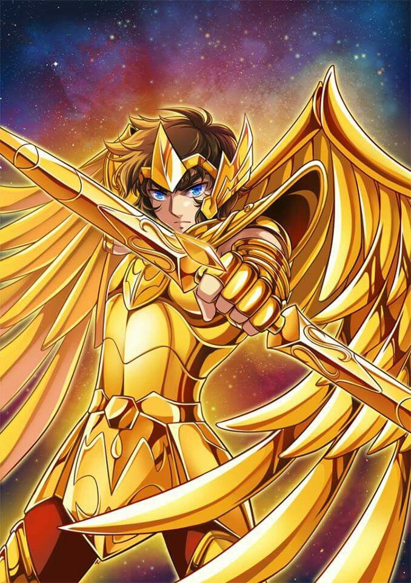

|  | BIOGRAFIA |
|---|---|
|
Aiolos é o Cavaleiro de Ouro de Sagitário, conhecido por sua coragem, justiça e lealdade à deusa Atena. Desde jovem, demonstrou grande talento, senso de honra e determinação, tornando-se um dos cavaleiros mais confiáveis do Santuário. Ele é lembrado por ter salvado a vida de Atena ainda bebê, sacrificando-se para protegê-la de ameaças internas ao Santuário. Seu legado inspira outros cavaleiros a lutar com bravura e proteger a justiça. | |
| ARMAS | |
|
Arco e Flecha de Ouro: Extremamente poderosos, podem disparar projéteis de energia cósmica com precisão sobrenatural. Cosmo Divino: Aiolos canaliza seu cosmo para aumentar força, velocidade e ataques, podendo destruir inimigos com energia pura e concentrada. | |
| Habilidades | |
|
Tiro de Flecha Cósmica: Dispara flechas energéticas com força imensa e precisão letal. Velocidade de Ouro: Movimenta-se e reage em velocidade sobre-humana, própria dos cavaleiros de ouro. Defesa e Intuição: Seu cosmo aguça reflexos e percepção, permitindo prever ataques e proteger aliados. |